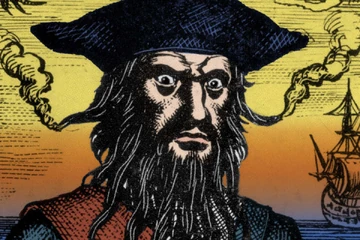
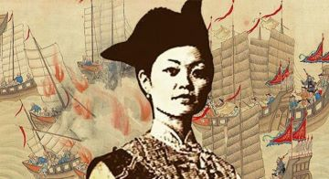
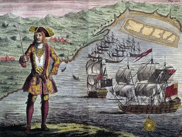
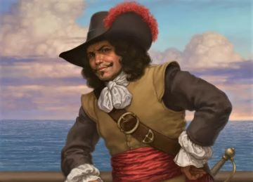
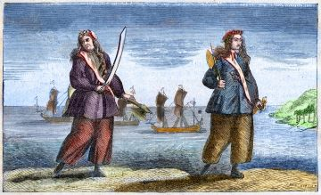

Blackbeard

Perhaps the most iconic pirate of all time, Blackbeard operated in the West Indies and along the American colonies in the early 1700s.
He was a master of psychological warfare. He grew a massive, tangled beard and would tie lit fuses under his hat during battle, causing his face to be framed by a terrifying halo of smoke.
He relied heavily on intimidation to make crews surrender without a fight, often avoiding actual bloodshed when possible. He eventually met his end in 1718 after being hunted down and killed by the British Royal Navy.
Ching Shih (Madame Cheng)

One of the most successful pirates in history, she commanded the "Red Flag Fleet" in the South China Sea in the early 1800s.
She took control of a massive pirate confederation after her husband died. At the height of her power, she commanded hundreds of ships and tens of thousands of pirates.
She was a brilliant strategist and administrator who enforced a very strict code of conduct among her fleet. Unlike many of her contemporaries, she successfully negotiated her retirement with the Chinese government and lived the rest of her life in relative peace.
Bartholomew Roberts (Black Bart)

Known as the most successful pirate of the "Golden Age of Piracy" in terms of sheer numbers.
He captured or destroyed over 400 ships during his career. He was known for being well-dressed and well-spoken, and he strangely banned gambling and insisted on a disciplined ship.
He was a reluctant pirate, forced into the life after his ship was captured, but he quickly excelled at it. He was eventually killed in battle in 1722.
Sir Henry Morgan

The man who inspired the famous rum brand was technically a privateer—a pirate sanctioned by the government to attack enemy ships (in his case, the Spanish) during times of war.
While he acted like a pirate in the Caribbean, he had the support of the British government. His raids on Spanish cities like Panama were so effective (and profitable for England) that he was eventually knighted and served as the Lieutenant Governor of Jamaica.
Sir Drake Francis
Another legendary figure whose status as a "pirate" depends on your perspective.
Sent by Queen Elizabeth I to raid Spanish colonies and shipping, he became the first Englishman to circumnavigate the globe. To the English, he was a national hero and explorer; to the Spanish, he was a notorious pirate and "The Dragon" (El Draque).
Anne Bonny and Mary Read

These two are the most famous female pirates of the 18th century, both serving on the crew of "Calico Jack" Rackham.
Both women often dressed as men to join the crew, though their identities were eventually revealed. They were known for being just as fierce, if not more so, than their male counterparts. When their ship was captured, the men were hanged, but Bonny and Read were spared because they were both pregnant.